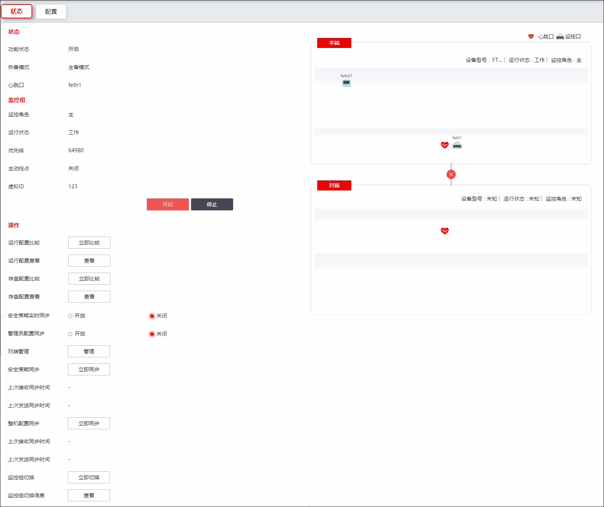

状态模块用于展示本机当前高可用功能的运行状态、工作模式、监控角色等信息。同时支持执行安全策略同步、整机配置同步、管理员配置同步、实时配置同步、运行比较等操作。
| 步骤1 | 选择 。 |

| 步骤2 | 查看运行状态 |
展示本机高可用功能启用/关闭状态，工作模式（主备模式、连接保护模式、负载均衡模式、集群模式），本机工作状态的通信接口。
| 步骤3 | 监控组 |
展示本机监控角色、运行状态、优先级、是否开启主动抢占功能、虚拟ID等信息。
点击【开启】按钮，可启动NGFW的高可用功能，点击【停止】按钮，可关闭NGFW的高可用功能。工作模式、心跳口、监控角色、虚拟ID等相关配置参见 配置。
| 步骤4 | 操作 |
NGFW的高可用功能开启之后，才可进行以下配置。
参数 |
说明 |
|---|---|
运行配置比较 |
点击“立即比较”，可选择系统及对端地址，进行运行配置对比。 |
运行配置查看 |
点击“查看”可查看运行配置对比结果。 |
存盘配置比较 |
点击“立即比较”，可选择系统及对端地址，进行存盘配置对比。 |
存盘配置查看 |
点击“查看”可查看存盘配置对比结果。 |
安全策略实时同步 |
选择是否开启实时配置开关，开启后，本机配置将实时同步至对端设备。 |
管理员配置同步 |
选择是否开启管理员相关信息的管理员配置开关。 |
对端管理 |
点击“管理”，可管理对端信息。 |
安全策略同步 |
点击“立即同步”可将本机的策略配置（网络、虚拟系统、管理员和HA配置除外）信息同步到对端机。 |
整机配置同步 |
点击“立即同步”可将本机的策略信息和除HA之外的所有的配置信息同步到对端机上。 |
监控组切换 |
在“立即切换”可手动切换数据流通过主/备设备。 |
监控组切换信息 |
点击“查看”，可查看监控组切换信息。 |